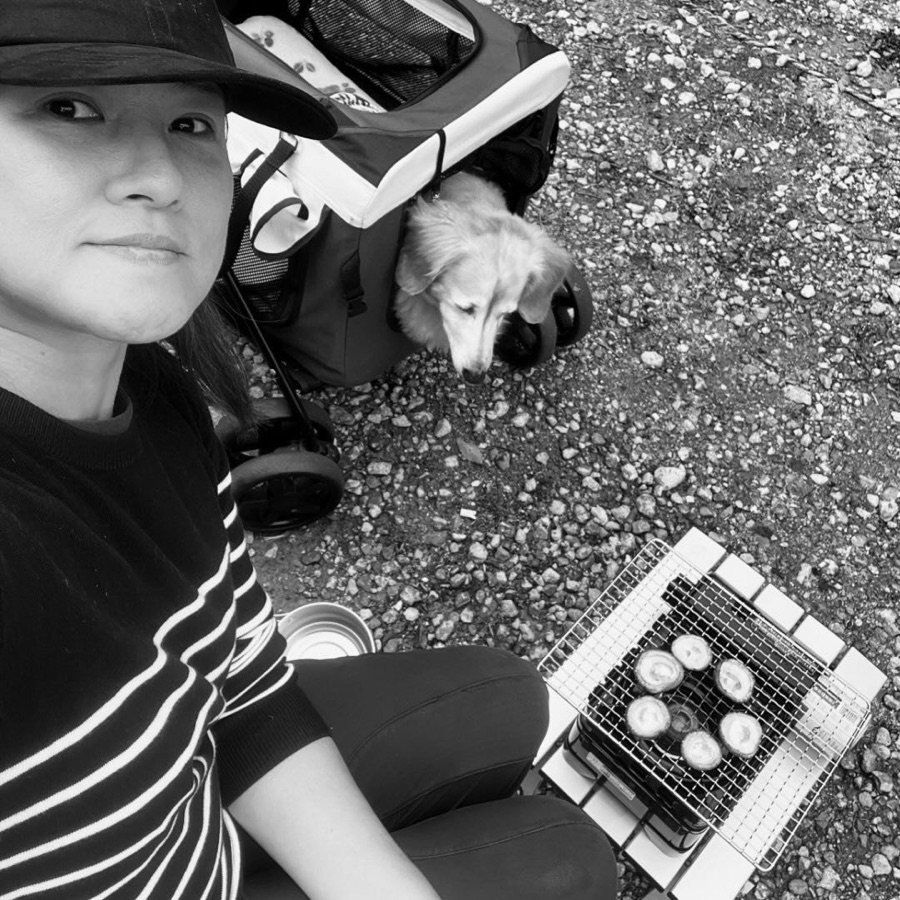

WORKS
制作事例
各業種向けのテンプレートもご用意しております。
お問い合わせからお気軽にご相談ください。
詳しくはお問い合わせからお気軽にご相談ください。
この分野の事例は、守秘義務のため個別にお見せしています。
お問い合わせからお気軽にご相談ください。
EXPERTISE
できること
-
01
Webデザイン・実装Web & Digital
設計からデザイン、コーディングまで。
Webサイト・LP・バナー・UI設計・コーディング
使用ツール- Figma
- HTML
- CSS
- JavaScript
- WordPress
- STUDIO
-
02
グラフィックGraphic & Branding
お店や事業の「顔」になるものを丁寧に。
ロゴ・名刺・ショップカード・チラシ・販促物・印刷物
使用ツール- Illustrator
- Photoshop
-
03
運用・改善Operation & Growth
公開した後も、数字を見ながら育てていく。
EC運用・アクセス解析・データ分析・改善の提案
使用ツール- GA4
- GTM
- Microsoft Clarity
- Search Console
- Excel
- Google Sheets
-
04
図解・イラスト・漫画Illustration & Visual
込み入った情報を、わかりやすく。
施設マップ・フロアマップ・図解・イラスト・漫画
使用ツール- Illustrator
- Photoshop
- AI
- Claude
- ChatGPT
- Gemini
- LICENSE
- 情報セキュリティマネジメント試験（SG）
- 日商簿記検定 2級
- 学芸員補
ABOUT
プロフィール

IWATA MAKIKOGrowl LaLaLa Design
Webデザインとコーディング、ECサイトの運用を中心に、ロゴやイラストなども手がけています。
大切にしているのは、相手に何が必要なのかを慎重に見極めること。「誰に、何を、どう届けたいのか」を一緒に整理するところから始め、公開したあとも数字を見ながら、届いているかを確かめて直していきます。つくって終わりにしない、最後まで手を離さない人でありたいと思っています。
社会人のスタートは、氷河期のフリーターからでした。決して順調な道のりではありませんでしたが、目の前の仕事に向き合いながら、できることを少しずつ増やしてきました。15年近く、犬たちと支え合いながら暮らした時間も、いまの自分の土台となっています。最後の一匹を見送ったいま、改めて、自らや仕事と向き合っています。
好きなもの：散歩・おもウマイ店を見る・間取り図で妄想
CONTACT
お仕事のご相談は、メールかフォームからお気軽に！ 守秘義務のある案件は、個別にお見せしています。
info@growl-lalala-design.com